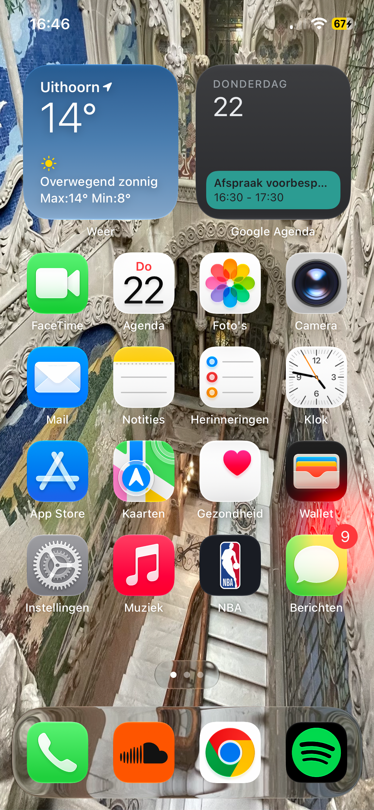

Verslaving?
Bij een verslaving heb je geen controle meer over het gebruik van middelen of over bepaald gedrag. Je wil bijvoorbeeld stoppen met gebruiken, maar dat lukt steeds maar niet. Je kunt verslaafd zijn aan middelen zoals alcohol of drugs, maar bijvoorbeeld ook aan gedrag zoals gokken of gamen. Een telefoonverslaving of verslaving aan het internet leunt hier net tegenaan.
Wat houdt een telefoon "verslaving" in?
Een telefoon is het middel van verslaving, niet het object. Een smartphone is in feite een middel waarmee je toegang hebt tot honderden verschillende dingen. Iemand is zelden verslaafd aan het apparaat zelf, maar eerder aan wat er op gebeurt, zoals sociale media of gamen. Wel gebruiken psychologen de term Problematisch Smartphonegebruik omdat het hetzelfde beloningsysteem heeft voor de hersens. Bij een telefoonverslaving moet je denken aan het niet kunnen weerstaan van het kijken op je telefoon nadat hij trilt, of dat je zonder nadenken je telefoon elke minuut opent.
Het probleem
Tegenwoordig hebben veel mensen hier last van. Dit komt omdat het gebruik van een smartphone nu standaard is, terwijl dit vroeger juist iets niet veel voorkomends was. Iedereen heeft een telefoon, zelfs kinderen krijgen steeds vroeger een mobieltje. Bedrijven maken hier al jaren gebruik van door apps te ontwikkelen die je aandacht zolang en zo vaak mogelijk triggeren. Hier gebruiken zij verschillende 'trucjes' om je aandacht te trekken, zoals:
- De rode bolletjes (notificaties) die rechtsboven de app verschijnen zodra er een melding is.
- Het gebruik van algoritmes, die je steeds meer van hetzelfde laten zien.
- Het gebruik van beloningssystemen, zoals het krijgen van likes en volgers
- Meldingen op bepaalde tijden, beloningssystemen, de oneindige scroll functie enz.
En nog veel meer vormen van afleiding.
Zo worden er veel manieren gebruikt om je terug te laten komen naar de app, wat grotendeels de verslaving doet ontstaan. Deze verslaving zorgt voor veel nadelen in het dagelijks leven: verspilling van tijd, slaapproblemen en minder sociaal gedrag. Het is een apparaat dat je laat ontsnappen uit je normale leven door je te belonen met oneindige entertainment en het vermijden van verveling.
